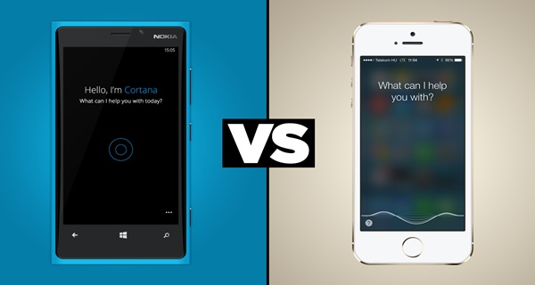

Teori Bahasa dan Otomata Mempelajari Apa?
Teori Bahasa
Teori bahasa membicarakan bahasa formal (formal language), terutama untuk kepentingan perancangan kompilator (compiler) dan pemroses naskah (text processor). Bahasa formal adalah kumpulan kalimat. Semua kalimat dalam sebuah bahasa dibangkitkan oleh sebuah tata bahasa (grammar) yang sama. Sebuah bahasa formal bisa dibangkitkan oleh dua atau lebih tata bahasa berbeda. Dikatakan bahasa formal karena grammar diciptakan mendahului pembangkitan setiap kalimatnya. Bahasa manusia bersifat sebaliknya; grammar diciptakan untuk meresmikan kata-kata yang hidup di masyarakat. Dalam pembicaraan selanjutnya ‘bahasa formal’ akan disebut ‘bahasa’ saja.
Otomata
Automata adalah mesin abstrak yang dapat mengenali (recognize), menerima (accept), atau membangkitkan (generate) sebuah kalimat dalam bahasa tertentu. Automata berasal dari bahasa Yunani automatos, yang berarti sesuatu yang bekerja secara otomatis (mesin). Istilah automaton sebagai bentuk tunggal dan automata sebagai bentuk jamak. Automata berkaitan erat dengan teori bahasa formal . Selain itu juga ada beberapa hal yang berkaitan dengan Otomata , yaitu Grammar . Grammar adalah bentuk abstrak yang dapat diterima untuk membangkitkan suatu kalimat otomata berdasarkan suatu aturan tertentu.
Kegunaan
teori bahasa dan otomata
Di dalam praktik teori bahasa dan otomata terdapat beberapa pembelajaran yang diajarkan kepada mahasiswa seperti finite state automata, deterministic finite automata, nondeterministic finite automata, grammar, regular expression, turning machine, dan lain-lain. Di dalam tbo juga dijelaskan juga teori tentang finite state machine (fsm) yang di dalamnya juga dijelaskan beberapa fungsi seperti fsm with output dan fsm with no output. Di dalam finite state machine with output ada beberapa contoh yang dapat digunakan dalam penelitian seperti mesin jaja, mesin atm, dan lain-lain. Agar lebih mudah dipahami penulis melnulskan beberapa Fungsi Ilmu yang dipelajari di TBO:
Untuk memeriksa dan mendesain perilaku rangkaian digital.
Mengecek teks yang besar, seperti website dengan menemukan kata-kata, frase atau pola lain. Contohnya keyword di google.
Adanya mesin abstrak yang mampu melakukan perhitungan matematis, yaitu mesin FSA (Finite State Automata).
Menganalisa kosakata / pembendaharaan kata dengan mengubah teks input menjadi unit logic dengan menggunakan komponen kompiler.
bisa menggunakan otomata sebagai media, yaitu dapat menerima input secara sekuensial dan dapat mengeluarkan output.
Memungkinkan penyampaian gagasan dan pemikiran, karena tanpanya komunikasi akan sulit terjadi.
Contoh penerapan ilmu
teori bahasa dan otomata
Siri & Cortana
Siri adalah perangkat lunak yang dikembangkan oleh perusahaan asal Amerika Serikat, Apple, yang menggunakan perintah atau input suara. Aplikasi ini diterapkan pada perangkat smartphone milik Apple, yaitu iPhone. Ketika pengguna iPhone memerintahkan secara suara, iPhone akan menangkap suara ini, merubahnya menjadi file biner dan kemudian mengirimnya melalui jaringan internet ke server Apple di Amerika Serikat. Di server ini, suara ini akan diolah menjadi perintah yang sesuai dengan keperluan pengguna. Sama seperti Siri, Cortana adalah aplikasi perintah suara, dan aplikasi ini dikembangkan oleh Microsoft sebagai pesaing dari Siri. Prinsipekrja Cortana mirip dengan Siri. Cortana terdapat di perangkat yang menggunakan sistem operasi Windows 10.

Konversi Aksara Latin ke Aksara Jawa menggunakan Finite State Automata
Metode Finite State Automata dapat menjadi solusi untuk proses konversi aksara latin ke Aksara Jawa. Metode Finite State Automata mempunyai fungsi recognition sehingga dapat mengenali karakter-karakter aksara latin sebagai masukan. Dalam kasus ini masukan aksara latin bertindak sebagai pita berupa deretan string yang nantinya akan dibaca oleh kepala pita (tape head). Pola suku kata bertindak sebagai Finite State Controler (FSC) yang mengatur jalannya kepala pita untuk proses pemisahan suku kata. Setelah pemisahan suku kata selesai dilakukan, suku kata tersebut akan dikonversikan ke Aksara Jawa sesuai dengan aturan penulisan Aksara Jawa.
Switch On/Off
Model tersebut mengingat apakah switch berada dalam state ”on” atau state ”off”. Model memungkinkan user untuk menekan tombol yang memiliki pengaruh berbeda tergantung pada keadaan switch:
* switch berada dalam state “off” maka setelah tombol ditekan state berubah menjadi “on”.
* Jika switch berada dalam state “on” maka setelah tombol ditekan state berubah menjadi “off”.
Salah satu state dinyatakan sebagai start state atau initial state yang merupakan state dimana sistem berada dalam keadaan awal. Dalam Contoh start state adalah off. Dalam pembahasan selanjutnya, start state ditunjukan oleh kata start dan panah menuju start state tersebut. Dalam Gambar state on dinyatakan sebagai final atau accepting state. Dalam state tersebut, peralatan yang sedang dikontrol oleh switch akan beroperasi.
Vending Machine
Dengan mengimplementasi Finite State, Vending machine memungkinkan seseorang untuk membeli barang yang terdapat di dalam mesin tersebut secara otomatis, tanpa adanya seorang penjaga atau kasir, yang menjadi perantara proses jual-beli tersebut. Proses penjualan ditangani sepenuhnya oleh mesin. Pembeli hanya tinggal memasukkan uang dan memilih barang yang akan dibeli.
Referensi
Arief Hidayat Sutomo: Implementasi Teori Bahasa dan Otomata
Darmayanti: Teori Bahasa dan Otomata
Materi Kuliah IF: Teori Bahasa dan Otomata